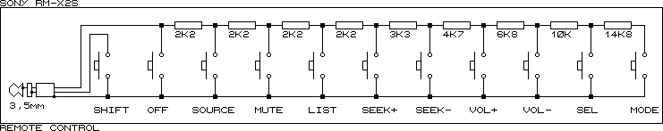

The wired remote interface is being introduced with the MkII tuner module
that started shipping in August/September 2001. The wired remote itself is
basically an array of resistors with certain (different) values that are linked
to each button press. The tuner module interfaces to this remote by applying
5V through a 22kOhm resistor to its tip and reading the actual voltage that
could be measured at the tip. Here is a basic diagram how it works:
And here is a schematic of the innards of an RM-X2S wired remote:

While this seems to be pretty basic, this is usually working quite well.
However, some people had problems with their in-car remotes that where using
an additional adapter to make them compatible with the Sony interface (e.g.
GM remotes with a GM-to-Sony adapter connected to the tuner module which itself
interfaces with the empeg). The tuner module reads the voltage at the "ADC
input" marked point and reports it to the empeg once it gets a stable read.
It sends a 4 byte data packet to the empeg's first serial port (/dev/ttyS0,
the port that is accessible through the 9pin-port on the back of the empeg
is /dev/ttyS1) that looks like this:
|
Data byte
|
value
|
description
|
| 1 |
0x02 |
indicator for a stalk interface command |
| 2 |
0x00 or 0x01 |
0x00 indicates no use of the shift modifier
0x01 indicates shift used |
| 3 |
ADC value |
Vadc*255/5 with Vadc being the actual voltage at the ADC input point |
| 4 |
checksum |
the sum of Bytes 2 and 3 |
Here is a table with the expected values for the different buttons. The 1.03
software uses a tolerance level of 2 while the upcoming 1.04 software and
the 2.0 software are less demanding and use a tolerance level of at least
6. So 1.03 accepts values 0x14-0x18 for source, while 1.04 would accept 0x10
to 0x1C.
| Value |
1.03 range |
1.04/2.0 range |
Button |
| 0x3A |
0x38-0x3C |
0x34-0x40 |
back/front |
| 0xAF |
0xAD-0xB1 |
0xA0-0xB5 |
middle |
| 0x9A |
0x98-0x9C |
0x94-0xA0 |
front/back |
| 0x2A |
0x28-0x2C |
0x24-0x30 |
attenuate |
| 0x5A |
0x58-0x5C |
0x54-0x60 |
back track |
| 0x48 |
0x46-0x4A |
0x42-0x4E |
forward track |
| 0x16 |
0x14-0x18 |
0x10-0x1C |
source |
| 0x84 |
0x82-0x86 |
0x7E-0x8A |
vol back (preset back with shift on) |
| 0x6e |
0x6C-0x70 |
0x68-0x74 |
vol forward (preset forward with shift on) |
Or, sorted by readback values:
| Value |
1.03 range |
1.04/2.0 range |
Button |
| 0x16 |
0x14-0x18 |
0x10-0x1C |
source |
| 0x2A |
0x28-0x2C |
0x24-0x30 |
attenuate |
| 0x3A |
0x38-0x3C |
0x34-0x40 |
back/front |
| 0x48 |
0x46-0x4A |
0x42-0x4E |
forward track |
| 0x5A |
0x58-0x5C |
0x54-0x60 |
back track |
| 0x6e |
0x6C-0x70 |
0x68-0x74 |
vol forward (preset forward with shift on) |
| 0x84 |
0x82-0x86 |
0x7E-0x8A |
vol back (preset back with shift on) |
| 0x9A |
0x98-0x9C |
0x94-0xA0 |
front/back |
| 0xAF |
0xAD-0xB1 |
0xA0-0xB5 |
middle |
You can read these values by issueing the following commands while in the
shell (with the player not running):
stty -echo raw 19200 < /dev/ttyS0
od -txC -v -w4 /dev/ttyS0
| command byte |
optimal R |
minimal R |
maximal R |
button |
| hex |
dec |
| 3a |
58 |
6477 |
5635 |
7372 |
back/front |
| af |
175 |
48125 |
43233 |
53811 |
middle |
| 9a |
154 |
33545 |
30430 |
37053 |
front/back |
| 2a |
42 |
4338 |
3616 |
5101 |
att |
| 5a |
90 |
12000 |
10807 |
13283 |
back track |
| 48 |
72 |
8656 |
7683 |
9695 |
fwd track |
| 16 |
22 |
2077 |
1473 |
2714 |
source |
| 84 |
132 |
23610 |
21488 |
25949 |
vol back |
| 6e |
110 |
16690 |
15152 |
18360 |
vol fwd |
The minimal/maximal figures are for 2.* software, 1.* is more restrictive.
Using standard resistor values to get as near as possible to the optimal
values, you can use the following circuits:
Series
| function |
ideal |
resistors |
actual |
| vol+ |
16690 |
12K + 4K7 |
16700 |
| vol- |
23610 |
18K + 5K6 |
23600 |
| track+ |
8656 |
8K2 + 470 |
8670 |
| track- |
12000 |
12K |
12000 |
| front/back |
33545 |
33K + 560 |
33560 |
| middle |
48125 |
47K + 1K2 |
48200 |
Parallel
| function |
ideal |
resistors |
actual |
| source |
2077 |
5K6, 3K3 |
2076 |
| att |
4338 |
56K, 4K7 |
4336 |
| back/front |
6477 |
18K, 10K |
6429 |
The plug itself is simply a standard 3.5mm stereo plug with the following
connections:
Tip ("right"): resistor sense
middle sleeve ("left"): shift sense
ring ("common"): ground.
Pretty simple interface, right?


{kind=link}
{kind=link}